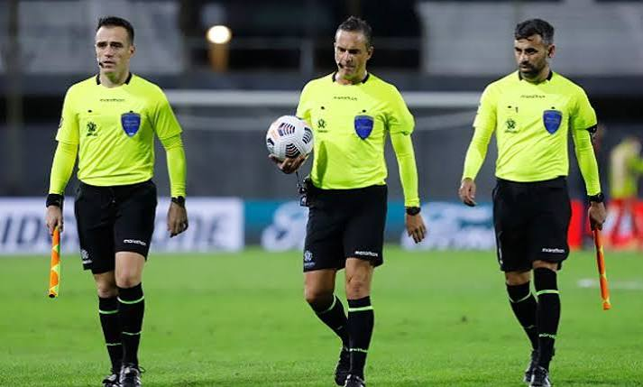

กฎกติกา
กฎเหล็กฟุตบอล ห้ามใช้มือ ผู้เล่นทุกคนห้ามใช้มือหรือแขนเล่นบอล (ยกเว้นผู้รักษาประตูที่ใช้มือได้เฉพาะในเขตโทษตัวเอง) การได้ประตู ลูกบอลต้องข้ามเส้นประตูเข้าไปเต็มใบอย่างถูกต้อง ถึงจะนับเป็น 1 แต้ม การล้ำหน้า ตัวรุกห้ามยืนต่ำกว่ากองหลังตัวสุดท้ายของคู่แข่งในจังหวะที่เพื่อนร่วมทีมส่งบอลมาให้ เวลาและการฟาวล์: แข่ง 90 นาที (ครึ่งละ 45 นาที) หากทำฟาวล์รุนแรงจะโดนใบเหลือง (เตือน) หรือใบแดง (ไล่ออก)